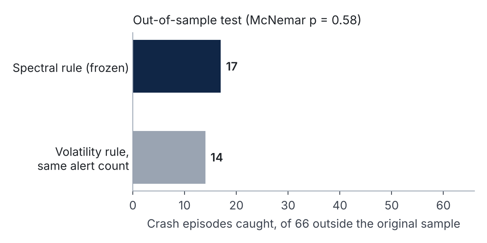

Bitcoin Drawdown Early Warning
A spectral two-stage warning system, rebuilt and tested out of sample
FBA Quant project (intercollegiate quantitative finance research group), three-member team, December 2025 to present
- Follow-up
- Led to my sole-authored paper How Much of Crash Early Warning Is Early?, which asks the general question with new models, data and evaluation.
- My role
- I proposed the core signal. I wrote the refactored package, the corrected evaluation, the significance and surrogate checks, the forecast and follow-up studies, and the tests. Teammates built the original detector and the cross-coin analysis.
- Data
- One-minute Binance klines for BTC, ETH, DOGE, AVAX and SOL, September 2020 to December 2024 (about 2.25 million rows per coin). BTC 2018 to 2020 and 2025 to 2026 held back for follow-up tests whose designs were written into the README before they were run.
- Methods
- Batched FFT features, XGBoost with a purged time split, equal-budget baselines, McNemar and circular-shift tests, IAAFT surrogates, HAR-X forecasts (QLIKE, Clark–West)
Research question
Can a Fourier-based measure of short-horizon price instability warn of sustained 4% Bitcoin drawdowns better than volatility alone, when the system is frozen and tested out of sample against baselines that raise the same number of alerts?
Design
Architecture
Spectral feature
For each minute, the closes of the trailing minutes are demeaned and transformed with a real FFT, and the signal is the mean magnitude of the highest-frequency bins:
and come from a trailing 30-day window that ends at . A strided view lets one batched FFT cover all 2.25 million windows without copying the data.
def compute_hS(prices, M, K):
p = prices.to_numpy(dtype=np.float32)
n = len(p)
if n < M:
return pd.Series(index=prices.index, dtype=float, name="hS")
windows = np.lib.stride_tricks.sliding_window_view(p, M)
detrended = windows - windows.mean(axis=1, keepdims=True)
mag = np.abs(np.fft.rfft(detrended, axis=1))
hs = mag[:, -K:].mean(axis=1)
return pd.Series(hs, index=prices.index[M - 1:], name="hS")Two stages
The rule stage raises an alarm and then sleeps for 240 minutes:
where TSR is the taker-sell share of volume. The learner stage re-ranks alarms with XGBoost (200 trees, depth 3, learning rate 0.03, subsample and column sample 0.8, positive weight set to the class ratio) on spectral, regime, order-flow and cross-coin cohesion features, the rolling cosine between changes in BTC’s and each peer’s standardized signal. Training uses 2021–22 and testing 2023–24; training alarms whose label window crosses the boundary are purged, and the top-k cutoff is fixed on training probabilities.
Evaluation
The target is a close at least 4% below the current price, sustained for 5 minutes, within 240 minutes, in a low-volatility regime. Positive minutes are merged into episodes, and each episode can be captured by at most one alarm, and only by an alarm whose own minute is positive. An equal-budget table compares, at the same number of alarms, a one-feature ranking, regularized logistic regression, XGBoost, and XGBoost without the spectral or cohesion features.
An external review found four errors in our evaluation, and I fixed each with a regression test: alarms credited in the gap between merged episodes, episodes from before the test period counted in the denominator, labels computed on truncated horizons, and minute gaps treated as consecutive data. The package runs its tests in CI.
Statistical tests
- Detection: McNemar test on the episodes caught by the frozen rule and by a volatility rule with the same alert count.
- Signal versus volatility: IAAFT surrogates with a volatility-standardized null, comparing the largest bursts in one-day blocks with surrogates that keep volatility at scales from one to twelve hours.
- Forecasting: a pre-specified HAR-X comparison on held-back 2025–26 data, not used to fit or tune the models, scored by QLIKE and the Clark–West test:
Findings
Detection on the original test years
| 2023–24, corrected evaluation | Alarms | Crash episodes | Caught |
|---|---|---|---|
| Rule stage | 592 | 3 | 2 |
| XGBoost, top 10 / 20 / 30% of alarms | 24 / 50 / 73 | 3 | 0 / 0 / 0 |
| Spectral z-score alone, same budgets | 24 / 50 / 73 | 3 | 0 / 1 / 1 |
- The 2.25 million minutes per coin are the engineering scale. The learner’s statistical sample is the rule’s alarms: 1,373 rows, of which 13 are crashes (11 in the training years, 2 in the test years). XGBoost ranked the two test-year crashes 75th and 460th of 592.
- Our original presentation reported 3 of 5 test episodes caught (60% recall); after the evaluation was corrected, the re-run did not reproduce it. Even taken at face value, 3 of 5 has a 95% interval of 15% to 95%, and narrowing it to ±10 points would take about 100 episodes, roughly 40 years at this rate.
- Over 2020–24 the rule’s alarms hit crashes more often than their own timing explains (13 positive alarms against 7.0 expected when the alarm sequence is shifted in time, p = 0.018), but the rule’s thresholds were set on those same years.
The frozen rule on data the project never used

| Frozen rule vs. volatility rule with the same alarm count | 2018-01 to 2020-09 | 2025-01 to 2026-09 |
|---|---|---|
| Crash episodes | 62 | 4 |
| Spectral rule: alarms, caught, recall (95% interval) | 1,162; 16; 26% (16–38%) | 647; 1; 25% (1–81%) |
| Volatility rule: alarms, caught, recall (95% interval) | 1,159; 14; 23% (13–35%) | 647; 0; 0% (0–60%) |
| Precision, spectral vs. volatility | 1.4% vs. 1.2% | 0.15% vs. 0% |
| Correlation of the two z-scores where the rules can fire | 0.85 | 0.85 |
- Over the 66 episodes the spectral rule caught 17 and the volatility rule 14: 8 only by the spectral rule, 5 only by the volatility rule and 9 by both. The exact McNemar p-value is 0.58; with 13 discordant episodes, significance would have needed an 11–2 split. With the volatility threshold frozen from 2021–22 instead, 17 against 13 (p = 0.39).
- The in-sample timing result did not replicate: on 2018–20 the frozen rule touched 16 episodes against 11.5 expected under time shifts (p = 0.09).
- Both rules catch about a quarter of episodes at a precision near 1%, so roughly 99 of 100 alarms are false. The frozen XGBoost filter caught none of the 4 episodes in 2025–26 at any cutoff.
Bursts versus volatility
| Volatility scale kept by the null | Real daily blocks with bursts beyond their surrogates | Null-model blocks | Difference, 95% interval over calendar quarters (points) |
|---|---|---|---|
| 12 hours | 41.0% | 4.5% | +31.1 to +41.6 |
| 6 hours | 32.4% | 3.2% | +22.7 to +35.7 |
| 4 hours | 22.1% | 3.6% | +12.3 to +25.0 |
| 2 hours | 7.2% | 2.7% | +1.3 to +7.7 |
| 1 hour | 2.3% | 1.4% | −1.3 to +3.0 |
- The bursts are real. Against surrogates that keep 12-hour volatility and the intraday pattern, real blocks exceed null-model blocks in all 18 calendar quarters.
- About a fifth of the excess is intraday seasonality: keeping the minute-of-day volatility profile lowers the flagged share from 50% to 41%. On weekdays volatility runs at 1.5 to 1.65 times its median around the U.S. open (13:30–16:15 UTC), and the first minute of each hour at about 1.35 times.
- The rest is volatility clustering. The excess shrinks as the null keeps faster volatility and is gone at one hour, which under the rule written in advance ended the search for another mechanism.
- Bursts of 20 minutes planted in synthetic data showed that the test resolves about an hour, so structure shorter than that is neither shown nor ruled out.
Forecasting volatility and tail risk
| Added to the HAR model, 2025-01 to 2026-09 | Clark–West t, 1 h | Clark–West t, 4 h | QLIKE gain, 1 h | QLIKE gain, 4 h |
|---|---|---|---|---|
| Spectral level | 2.17 (p 0.015) | 2.43 (p 0.008) | −0.003% | +0.02% |
| Scale-free spectral share | 0.73 | −0.80 | 0.00% | +0.002% |
| Cross-coin cohesion | 3.31 (p 0.0005) | 3.52 (p 0.0002) | +0.10% | +0.10% |
- The spectral level works as a volatility measurement but adds nothing as a forecast. It correlates 0.96 with last-hour realized variance, and its Clark–West rejections come with loss changes below 0.03%.
- The scale-free share adds nothing beyond volatility, and its correlation with volatility changed sign after the fit years (−0.16 and −0.13 in 2021–22, +0.05 to +0.13 in 2023–26).
- Cross-coin cohesion is detectable over 15,000 hours and survives a Bonferroni bound over the 24 volatility tests on Clark–West, but it improves forecast loss by only 0.1%.
- Neither spectral input improves the 5% quantile of the next four-hour return.
- The spectral signal behaves as a volatility measure, and the system mostly reacted to crashes already under way.
Ongoing
Whether any warning comes before a crash begins became the question of my sole-authored paper, How Much of Crash Early Warning Is Early?, now under review at the Journal of Forecasting.